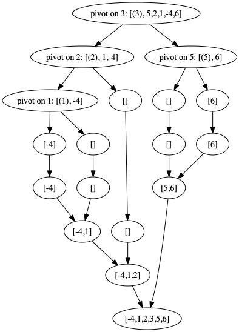

Visualizing Sorts Through Origami
In this post, we’ll talk about Origami programming (since it involves a lot of folding and unfolding). As a fun application, we’ll use it to visualize a couple sorting algorithms.
Origami programming is a generic programming pattern for recursive data types such as lists and trees:
-- Lists:
data List a = Nil | Cons a (List a)
-- Trees:
data Tree a = Leaf a | Node (Tree a) (Tree a)In the origami perspective, the first step is to replace the recursive reference in the type constructor with an arbitrary reference, r:
-- Lists:
data List' a r = Nil' | Cons' a r deriving Show
-- Trees:
data Tree' a r = Leaf' a | Node' r r deriving ShowBefore proceeding, note that whenever the recursive data structure is well-defined, we can recover it as the fixed point of this new type constructor. For instance, List a is isomorphic to any type, F a, such that List' a (F a) = F a.
Now, let’s play with the resulting bivariate type constructor abstractly. We’ll denote the abstract bivariate type constructor by s a r. For example,
s a r = List' a r, or
s a r = Tree' a r.
To begin, we’ll assume that s is natural in both types. That is to say, it is a bifunctor:
\[ s : \mathbf{Hask}\times \mathbf{Hask} \to \mathbf{Hask}\]
For instance, List' and Tree' are recognized as bifunctors as follows:
instance Bifunctor List' where
bimap f g Nil' = Nil'
bimap f g (Cons' x r) = Cons' (f x) (g r)
instance Bifunctor Tree' where
bimap f g (Leaf' x) = Leaf' (f x)
bimap f g (Node' rl rr) = Node' (g rl) (g rr)Now fix the first type, a for a moment, and consider the category \(\mathbf{Alg}(\texttt{s a})\) whose objects are functions \(\texttt{s a b} \to \texttt{b}\), and whose morphisms between objects \(\texttt{s a b} \to \texttt{b}\) and \(\texttt{s a c} \to \texttt{c}\) are commutative squares
Here second f = bimap id f applies f to the second type-paramter in the bifunctor s.
For example, the objects in \(\mathbf{Alg}(\texttt{List' a})\) are functions of type List' a b -> b, which (after pattern matching) are given by an element of b (which Nil' is sent to) and a binary function a -> b -> b (matched to Cons' a b).
Now suppose that \(\mathbf{Alg}(\texttt{s a})\) has an initial object \(\texttt{s a fix} \xrightarrow{\texttt{Fix}} \texttt{fix}\). We claim that fix is a fixed-point of s a. To see this, consider the unique morphism:
 where
where second Fix = bimap id Fix is the lift of Fix to the functor s a. We claim that Fix :: s a fix -> fix is an isomorphism. To see this, extend the diagram by adding the arrow Fix :: s a fix -> fix at the target of unFix:
The composition produces a new commutative square:
Since Fix :: s a fix -> fix is an initial object, the horizontal dotted arrows are uniquely determined by the vertical arrows, and must therefore both be the identity maps. Hence unFix . Fix = id and Fix . unFix = id, as claimed.
This shows that \(\texttt{s a fix} \cong \texttt{fix}\) is an isomporhism. In other words, fix is a fixed point of s a, which allows us to unwind it recurively as:
\[\texttt{fix} \cong \texttt{s a fix}\cong \texttt{s a (s a fix)}\cong \texttt{s a (s a (s a fix))}\dots\]
For instance, the fixed point of List' a can be unwound to
Nil' | Cons' a Nil' | Cons' a (Cons' a Nil') | ...that is, either an empty list, a list with one element, a list with two elements, etc.
Ok, so we’ve shown that the initial object of \(\mathbf{Alg}(\texttt{s a})\) is the recursive datatype we’re interested in, and we may identify it concretely as the fixed point Fix s a using the following construction
We can use Fix to define the recursive datatypes, such as lists:
-- Now define the recursive datatypes:
type ListF a = Fix List' a
-- along with convenient (lifted) constructors:
nil' = Fix Nil'
infixr 1 #
(#) x y = Fix $ Cons' x y
-- Here's an example list: [1, 2, 3, 4]
aList :: ListF Int
aList = 1 # 2 # 3 # 4 # nil'Or trees:
-- Define the recursive datatype, along with lifted constructors
type TreeF a = Fix Tree' a
leaf' = Fix . Leaf'
node' l r = Fix $ Node' l r
-- Here's an example tree:
aTree :: TreeF Int
aTree = node' (node' (leaf' 2) (leaf' 4)) (node' (leaf' 6) (leaf' 8))Moreover, generic programing allows all our recursive datatypes to inherit various properties. For instance, the fact that s was a bifunctor implies that Fix s is a functor:
Similarly, if s is bitraversable, then Fix s becomes traversable.
What else does this perspective get us? We get origami: folds and unfolds (also known as catamorphisms, and anamorphisms, respectively).
Folds:
Given a function f :: s a b -> b, the fact s a (Fix s a) -> Fix s a is an initial object implies that there exists a unique pair of maps:
The function gfold f :: Fix s a -> b is a generalization of fold to all recursive data types; we can read it’s definition directly off the diagram above:
Let’s look at a couple examples. First consider aggregating a monoid over our list:
This lets us add the values in our list:
print $ (gfold aggList) $ fmap Sum aList
>> Sum {getSum = 10}multiply them:
print $ (gfold aggList) $ fmap Product aList
>> Product {getProduct = 24}or convert it to a standard list:
print $ toList aList
>> [1,2,3,4]We can play the same game to aggregate monoids over trees:
This lets us count the leaves in our tree:
print $ (gfold aggTree) $ fmap (\_ -> Sum 1) aTree
>> Sum {getSum = 10}convert it to a standard list by a walking from left to right:
print $ flatten aTree
>> [2,4,6,8]or check for any odd elements:
isOdd x = x `mod` 2 /= 0
print $ (gfold aggTree) $ fmap (Any . isOdd) aTree
>> Any {getAny = False}Unfolds:
We may also play the dual game, and consider the category \(\mathbf{CoAlg}(\texttt{s a})\) whose objects are functions \(\texttt{b}\to \texttt{s a b}\), and whose morphisms between objects \(\texttt{b}\to \texttt{s a b}\) and \(\texttt{c} \to \texttt{s a c}\) are commutative squares
By construction1, unFix :: Fix s a -> s a (Fix s a) is a terminal object for \(\mathbf{CoAlg}(\texttt{s a})\). Indeed, for any function g :: b -> s a b we may recursively construct the map
phi :: b -> Fix s a
phi = Fix . second phi . gSince Fix is an inverse for unFix, this fits into a commutative square:
Conversely, any function phi fitting into the commutative square above must be given by the same recursive formula2; which proves that Fix s a is terminal.
Of course, phi depends on g :: b -> s a b, and it makes sense to rewrite it as such:
The function gunfold g :: b -> Fix s a allows us to unfold an instance of b into an instance of the recursive datatype Fix s a.
Let’s look at a couple examples:
As a simple example, consider decomposing an integer into its digits (in ascending order):
-- Our iterative step just peels off the smallest digit:
onesAndTens :: Int -> List' Int Int
onesAndTens x = if x <= 0 then Nil' else Cons' (x `mod` 10) (x `div` 10)
-- The full function just iterates:
digits = gunfold onesAndTensdigits 52341
>> 1 # 4 # 3 # 2 # 5 # nil'In general, unfolds for List' are “generators”: they are described by a state type b, together with a map next :: b -> List' a b which returns either Nil' (terminate the list), or the pair Cons' a b (produce the next list element of type a along with the next state of type b). The function gunfold next :: b -> ListF a iteratively generates the corresponding list given an initial state.
For instance to (inefficiently) list the prime numbers, we can use Eratosthene’s sieve, where b = [Int] describes the state of the sieve. At each stage, we peel off the smallest element of the sieve (which is prime), and update the sieve by filtering for those elements which are coprime to that prime:
nextPrime :: [Int] -> List' Int [Int]
nextPrime (prime:sieve) = Cons' prime (filter (coPrimeTo prime) sieve) where
coPrimeTo n = (/= 0) . mod n
primes = gunfold nextPrime [2..] primes
>> 2 # 3 # 5 # 7 # 11 # 13 # 17 # ...We can also unfold values into trees. For instance, suppose we want to factorize an integer. Let
Be a function which decomposes a composite integer into Just a pair of factors or Nothing for a prime. Then we can unfold an integer into a factor tree:
factorTree = gunfold f where
f b = case factorPair b of
Nothing -> Leaf' b
(Just (x, y)) -> Node' x yprint $ factorTree 60
>> Node' (Leaf' 2) (Node' (Leaf' 2) (Node' (Leaf' 3) (Leaf' 5)))Visualizing Sorts
Many sorting algorithms involve a computational tree, which we can explicitly instantiate and visualize by decomposing the algorithms as
\[\texttt{List} \xrightarrow{\texttt{gunfold}} \texttt{Tree} \xrightarrow{\texttt{gfold}} \texttt{List}\]
Merge Sort
Consider merge sort. Starting with the tree structure:
data MTree' a r = MEmpty | MLeaf a | MNode r r deriving Show
type MTreeF a = Fix MTree' a
-- Describe the bifunctor structure:
instance Bifunctor MTree' where
bimap _ _ MEmpty = MEmpty
bimap f _ (MLeaf x) = MLeaf (f x)
bimap _ g (MNode l r) = MNode (g l) (g r)Merge sort starts by successively splitting a list:
split :: [a] -> MTree' a [a]
split [] = MEmpty
split [x] = MLeaf x
split xs = MNode (take n xs) (drop n xs) where n = length xs `div` 2and then successively merging the pieces together in ascending order:
merge :: Ord a => MTree' a [a] -> [a]
merge MEmpty = []
merge (MLeaf x) = [x]
merge (MNode xs []) = xs
merge (MNode [] ys) = ys
merge (MNode (x:xs) (y:ys)) = if x <= y then x:merge (MNode xs (y:ys)) else y:merge (MNode (x:xs) ys)The full merge sort is just the composite:
print $ mSort [3,5,2,1,-4,6]
>> [-4,1,2,3,5,6]Using the GraphViz package, one may programatically convert the intermediate QTreeF’s into graphs, allowing us to visualize the computation:

Quick Sort
Quick sort also involves a computational tree: at each stage one
- arbitrarily chooses an element of the list on which to pivot, and
- moves all elements smaller than the pivot the the left of the pivot,
- moves all elements larger than the pivot to the right of the pivot.
- Repeats this process on both the sublist to the left of the pivot and the sublist to the right of the pivot.
The computation involves the following tree structure:
data QTree' a r = QEmpty | QLeaf a | QNode a r r
type QTreeF a = Fix QTree' a
-- Describe the bifunctor structure:
instance Bifunctor QTree' where
bimap _ _ QEmpty = QEmpty
bimap f _ (QLeaf x) = QLeaf (f x)
bimap f g (QNode x l r) = QNode (f x) (g l) (g r)
-- A custom show method:
instance (Show a, Show r) => Show (QTree' a r) where
show (QLeaf x) = show x
show (QNode x l r) = show l ++ " pivot: " ++ show x ++ " " ++ show r
show _ = ""Pivoting (about the first element) can be described as follows:
pivot :: Ord a => [a] -> QTree' a [a]
pivot [] = QEmpty
pivot [x] = QLeaf x
pivot (x:xs) = QNode x (filter (<x) xs) (filter (>=x) xs)After unfolding a list via pivot, the leaves are ordered:
print $ gunfold pivot [3,5,2,1,-4,6]
>> ((((-4) pivot: 1 ()) pivot: 2 ()) pivot: 3 (() pivot: 5 (6)))So we have nothing left to do except walk the tree from left to right:
The full quick-sort is just the composite:
print $ qSort [3,5,2,1,-4,6]
>> [-4,1,2,3,5,6]Once again, we can programatically visualize the computational tree using the GraphViz package package:

One needs to make a few additional assumptions for this to prove that
unFix :: Fix s a -> s a (Fix s a)is terminal, namely that functions to \[\texttt{Fix s a}\cong\texttt{s a (Fix s a)}\cong \texttt{s a (s a (Fix s a))}\cong \cdots\] can be defined recursively.↩This statement is a tautology, since the diagram and the recursive formula are equivalent - assuming functions to
Fix s acan be defined recursively. Said differently, the statement thatunFix :: Fix s a -> s a (Fix s a)is terminal is equivalent togunfold :: Bifunctor s => (b -> s a b) -> b -> Fix s a gunfold g = Fix . second (gunfold g) . gbeing a well defined map.↩